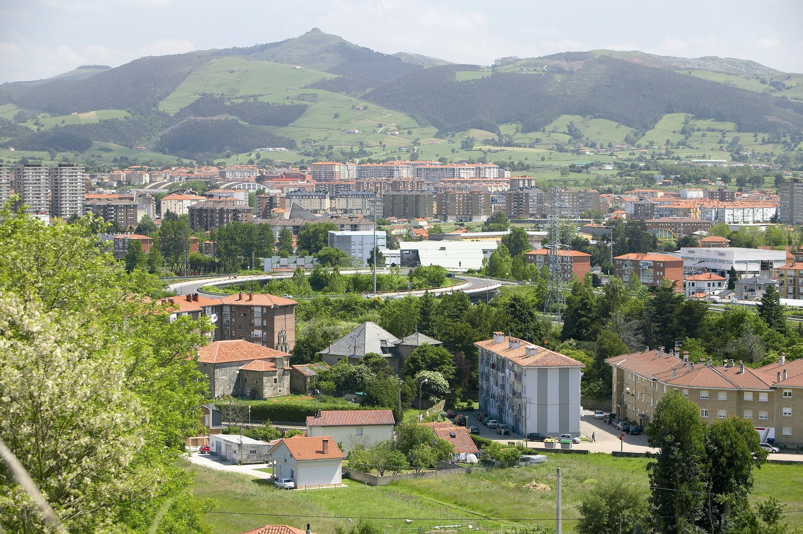

Torrelavega es un municipio y ciudad del norte de España.
La ciudad es de carácter industrial y comercial, siendo el segundo núcleo urbano más relevante de la comunidad autónoma de Cantabria por detrás de la capital autonómica Santander.
Pertenece a la comarca del Besaya y se sitúa en un valle o vega a unos 8 kilómetros de la costa Cantábrica y a 24,5 kilómetros de la capital cántabra

|
Viaverde
La lechera
|